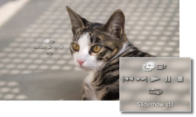

Foto > Visning af billeder som et slideshow
Visning af billeder som et slideshow
Hvert enkelt billede vises automatisk i rækkefølge. Når du har valgt ikonet for en mappe eller et medie, der indeholder billeder, og derefter trykket på START-knappen, begynder slideshowet.
Tips
- Slideshowet kan også startes fra kontrolpanelet eller indstillingsmenuen til et billede.
- Hvis slideshowet ikke kan startes ved at trykke på START-knappen, kan handlingen i stedet udføres fra kontrolpanelet.
Brug af slideshow-kontrolpanelet
Efter tryk på  -knappen under et slideshow vises kontrolpanelet.
-knappen under et slideshow vises kontrolpanelet.

 |
Slideshow stil | Vælg dette ikon for at vælge et af fem slideshow-visningsmønstre. |
|---|---|---|
 |
Slideshow hastighed | Vælg en af tre slideshow-hastigheder: [Hurtig] > [Normal] > [Langsom]. |
 |
Tidligere | Vælg dette ikon for at få vist det forrige billede. |
 |
Næste | Vælg dette ikon for at få vist det næste billede. |
 |
Afspil | Start slideshowet. |
 |
Pause | Hold pause i slideshowet. |
 |
Stop | Stop slideshowet. |
 |
Gentag | Afspil slideshowet gentagne gange. |
Tip
Når (Slideshow stil) er indstillet til [Fotoalbum] eller [Fotoalbum 2], skal du bruge den højre pind på den trådløse SIXAXIS™-controller til at betjene funktioner som forstørrelse eller formindskelse af billeder eller justering af hastigheden for et slideshow.
Afspilning af et diasshow, mens der afspilles musik
Du kan afspille et diasshow og afspille musik samtidigt.
1. |
Start musikafspilningen under |
|---|---|
2. |
Tryk på PS-knappen. |
3. |
Gå til |
 (Musik).
(Musik). (Foto), og vælg de billeder eller den mappe, der skal vises som diasshow, og tryk derefter på START-tasten.
(Foto), og vælg de billeder eller den mappe, der skal vises som diasshow, og tryk derefter på START-tasten.Tips
- Hvis du trykker på PS-tasten under samtidig afspilning, vises XMB™, og du kan vælge ny musik eller nye billeder.
- Hvis du vil afslutte afspilningerne, skal diasshowet og musikken stoppes hver for sig. Når du har stoppet en af delene, skal du vælge det spor eller billede, som afspilles, og stoppe afspilningen.
- Du kan ikke afspille en Super Audio CD og et diasshow samtidigt.
- Hvis
 (Indstillinger) >
(Indstillinger) >  (Musikindstillinger) > [Outputfrekvens] er indstillet til [44,1/88,2/176,4 kHz], kan du ikke afspille musikindhold samtidigt med et slideshow.
(Musikindstillinger) > [Outputfrekvens] er indstillet til [44,1/88,2/176,4 kHz], kan du ikke afspille musikindhold samtidigt med et slideshow.
Vigtigt
Ikke alle PS3™-systemer kan afspille Super Audio CD'er. Yderligere oplysninger findes under [Understøttede disktyper].